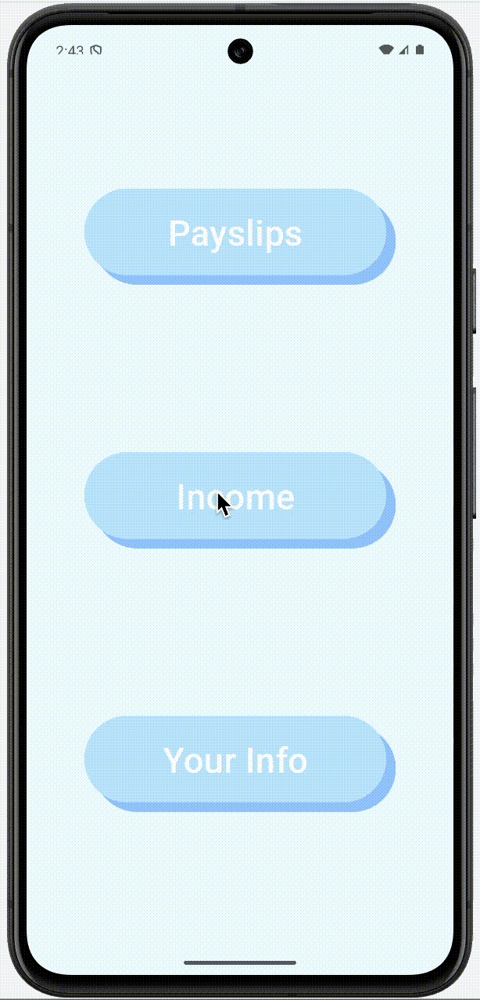
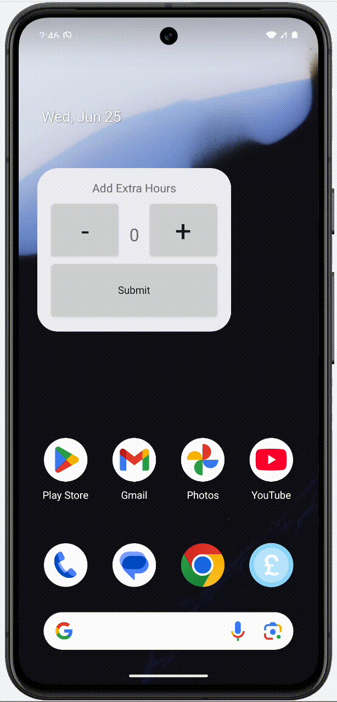
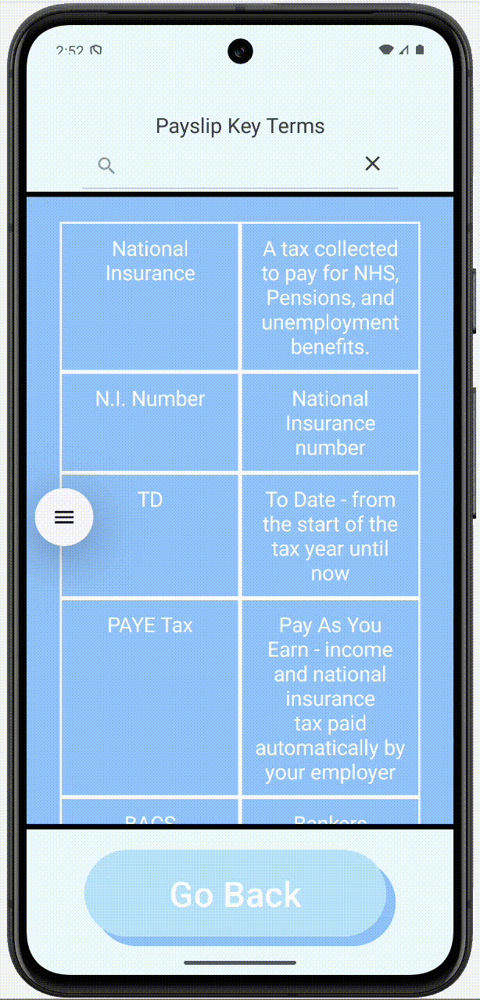

A mobile application to educate users on tax payments, focused on clean UI, rich animations and user accessibility via home screen widgets. Aspects used as example material for future students by the University of Brighton. Data is collected on app startup, and encrypted using Android Keystore.
Using this information, the user can see takehome pay and taxed pay. Tapping and holding displays a breakdown of the tax payments.
Overtime hours can be added to the app from the homescreen widget.
The app also provides a table of definitions for common tax and payslip terms, which can be searched
